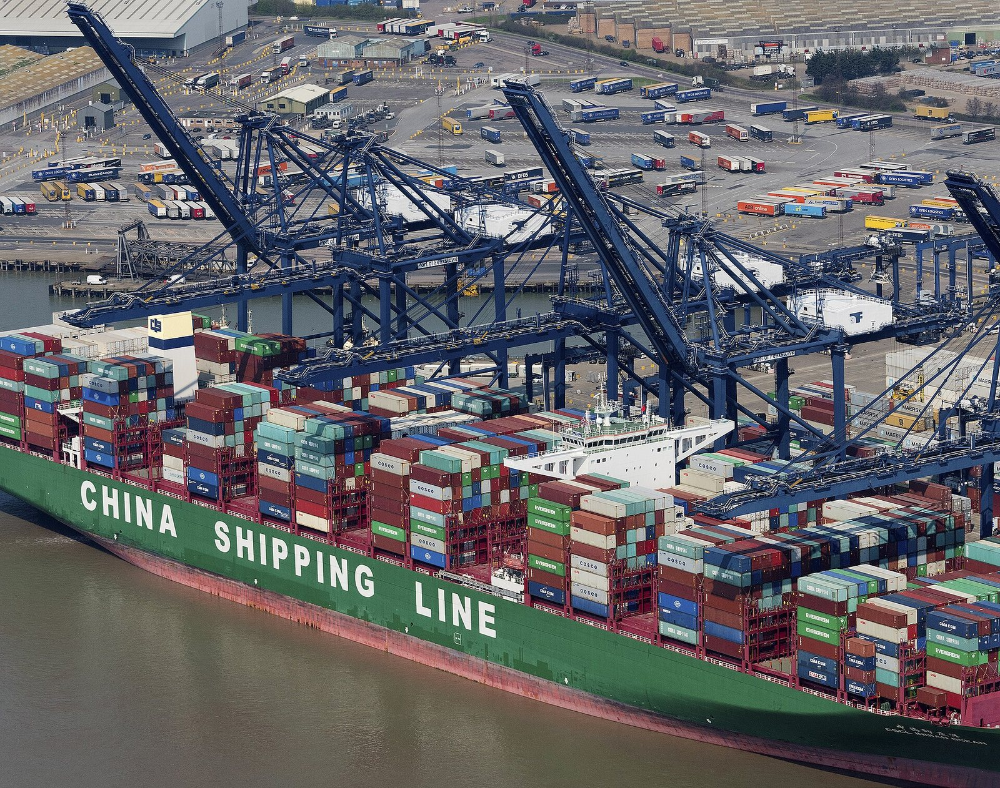

Perché conta: quando il petrolio sale, tutto diventa più caro: benzina, trasporti, riscaldamento, produzione industriale. A $94 al barile, l'inflazione rischia di tornare a salire — proprio mentre la BCE si appresta ad alzare i tassi domani e la Fed americana valuta un nuovo rialzo a settembre. Il costo del denaro alto e l'energia cara sono una combinazione difficile per famiglie e imprese.
Martedì 8 settembre 2026 il prezzo del petrolio WTI (West Texas Intermediate — il greggio di riferimento americano) balza del +3,01% a $94,24 al barile. È il sesto giorno consecutivo di rialzi, e il livello più alto toccato dal greggio da luglio 2022. Il catalizzatore della giornata sono gli attacchi delle milizie Houthi yemenite — sostenute dall'Iran — contro infrastrutture energetiche in Arabia Saudita: raffinerie, impianti di trattamento e siti di stoccaggio. Gli attacchi riaccendono la paura di una riduzione dell'offerta globale di petrolio proprio nel momento peggiore.
Chi sono gli Houthi e perché attaccano l'Arabia Saudita
Gli Houthi sono una milizia armata di origine religiosa sciita che controlla gran parte dello Yemen settentrionale dalla guerra civile del 2015. Sono sostenuti militarmente e finanziariamente dall'Iran, il principale rivale regionale dell'Arabia Saudita. Nell'ambito del più ampio conflitto tra USA e Iran — scoppiato all'inizio del 2026 con operazioni militari americane e israeliane contro l'Iran — gli Houthi svolgono il ruolo di proxy (forza per procura) dell'Iran, colpendo obiettivi sauditi e le rotte marittime nello Stretto di Hormuz e nel Mar Rosso.
Per i mercati finanziari, ogni attacco a infrastrutture energetiche saudite ha lo stesso effetto: alimenta il cosiddetto War Premium (premio di guerra) incorporato nel prezzo del greggio. I trader aggiungono al prezzo di base del petrolio un margine aggiuntivo per compensare il rischio che l'offerta venga improvvisamente ridotta da un'escalation militare.
💡 Impara: War Premium (Premio di Guerra) sul Prezzo del Petrolio
Il War Premium (premio di guerra) è la componente del prezzo del petrolio che non riflette la domanda e l'offerta attuali, ma il rischio che un conflitto geopolitico riduca l'offerta futura. Quando c'è tensione nelle regioni produttrici o lungo le rotte di transito chiave — come lo Stretto di Hormuz, attraverso cui passa circa un quinto del petrolio mondiale — i trader incorporano nel prezzo un margine di sicurezza. Questo spiega perché a volte il petrolio sale anche senza che la produzione fisica cambi: è la paura, non la scarsità reale, che muove il mercato nel breve periodo.
I prezzi delle materie prime nella seduta dell'8 settembre
| Asset | Prezzo | Variazione giornaliera |
|---|---|---|
| WTI Crude (petrolio) | $94,24/barile | +3,01% (6° giorno consecutivo) |
| Oro | $4.367,90/oz | −0,84% |
| Bitcoin (BTC) | ~$78.370 | −1,6% circa |
L'oro scende: perché il bene rifugio cede al petrolio?
Sembra paradossale: c'è una crisi geopolitica, e l'oro — considerato il classico bene rifugio in tempi di incertezza — scende dello 0,84% a $4.367,90 per oncia. La spiegazione è nel meccanismo dei tassi di interesse: oro e tassi reali si muovono in direzione opposta. Quando i tassi salgono (come si aspetta il mercato dalla Fed il 16 settembre e dalla BCE domani), il costo opportunità (costo di opportunità — il guadagno a cui si rinuncia) di detenere oro aumenta: l'oro non paga cedole né dividendi, mentre i titoli di stato sì. Tassi alti → oro meno attraente.
In altre parole: in questo momento il mercato è più preoccupato dall'inflazione e dai tassi alti che da un rischio sistemico geopolitico. L'oro scende perché gli investitori preferiscono liquidare posizioni per comprare obbligazioni ad alto rendimento.
💡 Impara: Costo Opportunità (Opportunity Cost) e Beni Rifugio
Il costo opportunità (opportunity cost) è il valore di ciò a cui si rinuncia scegliendo un'alternativa rispetto a un'altra. Applicato all'oro: se i titoli di stato americani pagano il 4-5% l'anno e l'oro non paga nulla, detenere oro ha un costo opportunità elevato. Per questo l'oro tende a salire quando i tassi reali (tassi nominali meno inflazione) sono bassi o negativi, e a scendere quando i tassi reali salgono. I beni rifugio (safe haven assets — attività finanziarie che mantengono o aumentano il valore in periodi di crisi) includono oro, franchi svizzeri e titoli di stato tedeschi: sono preferiti quando il rischio principale è una crisi finanziaria o un crollo azionario, non quando il problema è l'inflazione.
Il meccanismo che lega il petrolio all'inflazione e alle banche centrali
A $94 al barile, il petrolio torna a essere il principale problema di BCE (Banca Centrale Europea) e Federal Reserve. Il meccanismo è diretto: un barile di greggio più caro aumenta il costo di produzione di quasi tutto — dalle plastiche ai fertilizzanti, dai trasporti all'elettricità. Questo si traduce in prezzi più alti per imprese e consumatori: inflazione.
La BCE, che si riunisce domani 10 settembre, deve alzare i tassi proprio per combattere un'inflazione che nell'Eurozona è già al 2,9% — sopra l'obiettivo del 2%. Ma se il petrolio continua a salire per ragioni geopolitiche, alzare i tassi non risolve il problema energetico: rende solo il credito più caro per tutti senza abbassare il prezzo del greggio. È il dilemma classico della stagflazione (stagflation — combinazione di inflazione alta e crescita economica debole), dove le banche centrali non hanno strumenti efficaci.
| Variabile | Livello attuale | Implicazione per i mercati |
|---|---|---|
| WTI Petrolio | $94,24/barile | Inflazione in risalita |
| Inflazione Eurozona | 2,9% | Sopra target BCE del 2% |
| Tasso BCE attuale | 2,25% | Atteso rialzo a 2,50% domani |
| Tasso Fed USA | 3,50–3,75% | Possibile nuovo rialzo il 16 settembre |
📌 Cosa monitorare questa settimana
Mercoledì 10 settembre la BCE annuncerà la sua decisione sui tassi: +25 punti base a 2,50% è lo scenario di base prezzato al 99% dai mercati. La variabile che conta è la conferenza stampa: la presidente Christine Lagarde darà indicazioni sul prossimo passo. Se segnala una pausa, il mercato potrebbe alleggerire la pressione sui titoli sensibili ai tassi. Se invece lascia aperta la porta a un ulteriore rialzo, banche e utilities subiranno nuove pressioni. Sul fronte energia, ogni sviluppo militare in Arabia Saudita o nello Stretto di Hormuz può far muovere il petrolio di altri 2-5 dollari in poche ore.
Alma Finanza · © 2026 · Contenuto a scopo informativo ed educativo. Non costituisce consulenza finanziaria né sollecitazione all'investimento. I dati riportati provengono da fonti pubbliche al momento della pubblicazione. Investire comporta rischi, inclusa la possibile perdita del capitale.
Nota metodologica: i prezzi delle materie prime sono riferiti ai future di riferimento (WTI front-month per il petrolio) e alle quotazioni spot di chiusura per oro e Bitcoin.